diskOS Disco!
The album cover is the interface. A touch UI made for the Disc's round 360 px screen, built on b0hemia's diskOS: the playing album fills the screen, a faint CD rainbow runs around the rim, and everything else sits on glass around it.
New in 1.2.0: let chance choose. Album Roulette sends your album covers spinning, slows to a winner, and lets you tap to hear the album in track order. Rediscover a forgotten favourite, or hold the winning cover to spin again. A vinyl menu icon and an “I feel lucky!” landing page welcome you from the main menu, Apps and shortcuts. Requires the separately installed Album Roulette app. Scrolling also feels lighter, with smoothly curved rows and a drawer that reverses without jumping. Meet Album Roulette · Release notes
Free and open source · testing release, as-is · not affiliated with FiiO or Snowsky
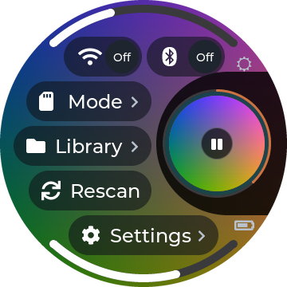
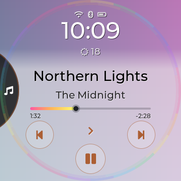
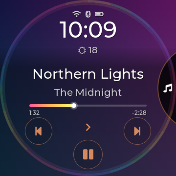
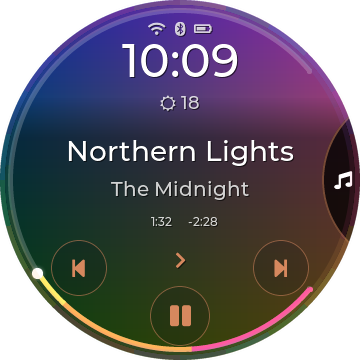
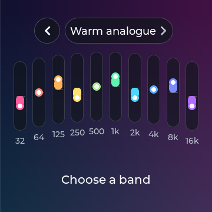
Everything about the song, nothing in the way.
The cover fills the screen, sharp. Over it: the time and the weather, the title and artist, a rainbow progress you can drag to seek, and play controls on an arc that follows the round edge.
- Tap the title for Favourite, Album, Artist, Queue, Lyrics and Immersive.
- Hold the title for the full-screen cover, or to favourite the song.
- Line or arc: progress under the title, or all the way around the rim.
- Readable on any cover: text and fades adapt to each album.
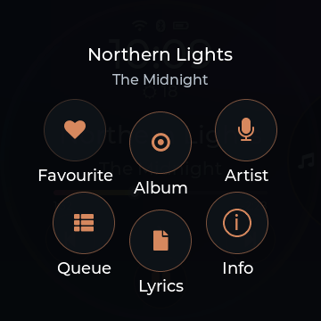
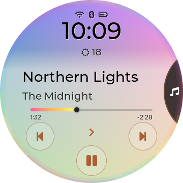
A shard on the rim that opens into your menu.
No home screen full of buttons. A small shard sits in the right edge; tap it and a circle slides out with your sections. Tap the top or bottom to step through them (the screen changes behind it), the middle to open one, or hold it to go back to Music.
- Your sections, your order: Music, Library, Artists, Songs, Albums, Search, Queue, EQ, Weather and more.
- Gestures with feedback: back from the left edge, Music from the bottom, Quick Settings from the top.
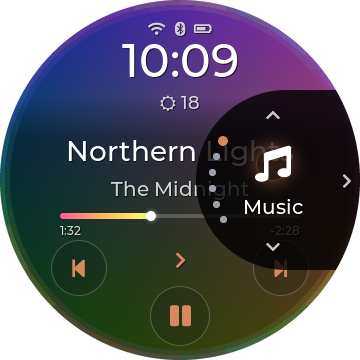
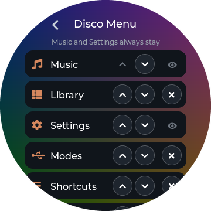
Ten rainbow faders and a volume you can drag.
Pick a preset or make ten of your own. Tap a band, drag it, double-tap to reset; switch the − and + between gain and frequency. Press a volume key and an arc along the rim fills with the level.
- Queue that behaves: added songs play next, in order, then your music carries on.
- Working modes: USB storage, USB DAC, Bluetooth DAC and AirPlay.
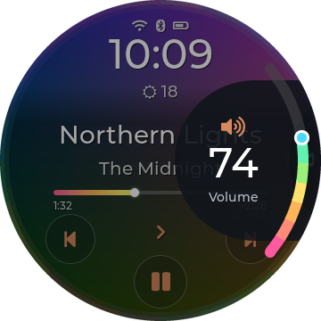
Made for a circle, all the way through.
Lists follow the curve, nothing hides behind the menu, and every popup speaks the same language. Dark, light, or automatic by the time of day.
Quick SettingsPull down from the top
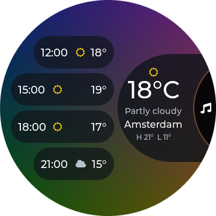
WeatherNow and the next 12 hours
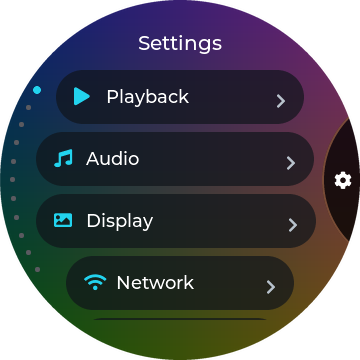
SettingsCurved lists, four in view
EqualizerRainbow or accent faders
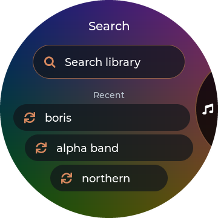
SearchRecent searches one tap away
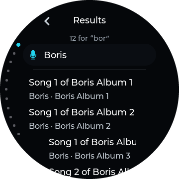
ResultsArtists first, then songs
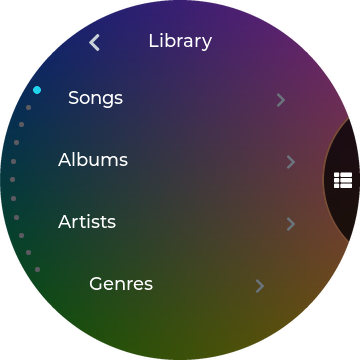
LibrarySongs, albums, books, folders
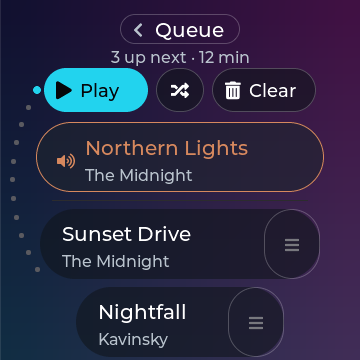
QueueDrag to reorder
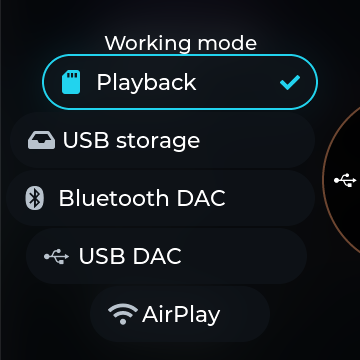
Working modeLocal, USB, Bluetooth, AirPlay
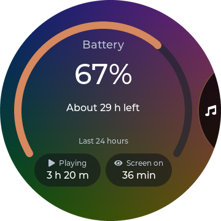
BatteryTime left at your pace
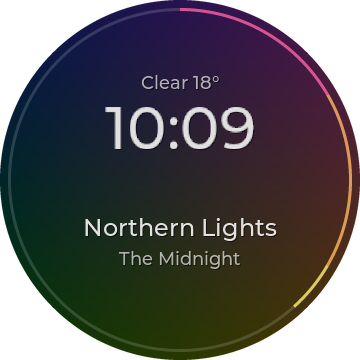
StandbyAlways dark, redraws once a minute
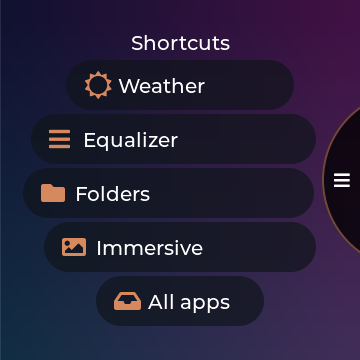
ShortcutsFive of your choice
Make it yours.
Settings › Display › Disco Options gathers everything that's only about the Disco look.
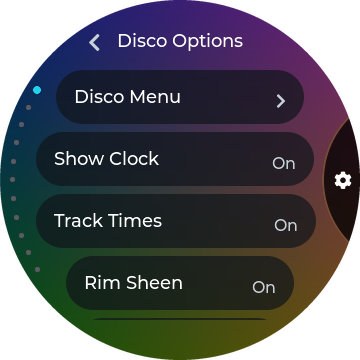
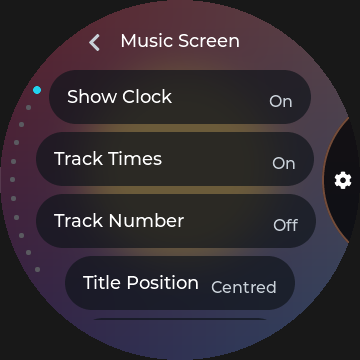
Safe SD updates
Signed builds from the card install as a trial and roll back by themselves if they don't start.
Stock is never far
FiiO's own interface is one setting, or one held key at power-on, away.
Hold for more
Hold any song, album, artist, genre, file or folder for its actions. A tap still plays.
Ring and Braun.
Two more complete themes with the same features and settings, one tap away under Display › Theme. Upstream's Stone is kept too.
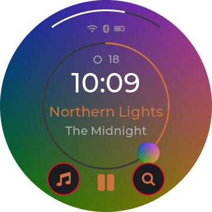
RingThe progress ring is the interface
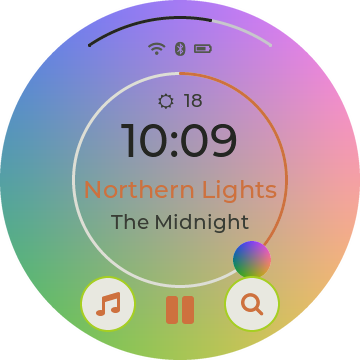
Ring LightOff-white with lime
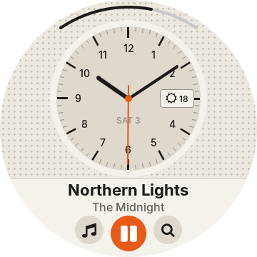
BraunAfter Dieter Rams' SK4
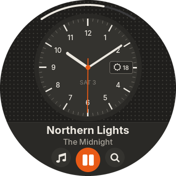
Braun DarkCharcoal and aluminium
Twenty quiet minutes.
You need a Snowsky Disc on FiiO firmware V2.57, the official V2.57 firmware ZIP, a Linux
computer and a good USB cable. The installer is diskOS's; the interface is ready-built in
payload/mq_ui.
Download
Get the latest release (Source code,
tar.gz) and unpack it. The ready-built interface is inside as payload/mq_ui.
tar xzf diskos-disco-1.0.tar.gz && cd diskos-disco-1.0
./install.sh # first time only: host setup
Make your update keys (once, optional)
They let you install new builds from the SD card later. Keep the private keys safe. Skip this and leave
out --ota-key if you only want to flash.
sh ui/tools/owner-keys/diskos-keys.sh # creates ./diskos-keys/
cp diskos-keys/diskos-root.pub.pem payload/
Flash the public variant
Power the Disc off, hold Volume Down and plug in USB. Before you answer y, check that
the ota: ON … key sha256 line matches your key.
./diskos-installer install \ --firmware SNOWSKY_DISC_update_20260909_v257.zip \ --variant public \ --ui payload/mq_ui \ --ota-key payload/diskos-root.pub.pem
Update from the SD card, any time
Download mq_ui from a release, sign it, copy the diskos-update folder to the card,
then Settings › System › Update from SD Card. It runs as a trial until music has played.
sh ui/tools/owner-keys/diskos-sign.sh path/to/mq_ui 1.2.0
diskos_*.bin images: they contain FiiO's firmware.